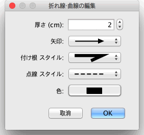

| 多角線・曲線の編集 | |||
プラン図上で多角線・曲線を選択し、マウスを使ってその線の位置を変更することができます。 一本の多角線・曲線がプラン上で選択されている際、その線のポイントインデケーターを動かすことができます。
マウスのポインターが線のポイントインデケーターの上に位置している時、ドラグ・ドロップ可能の表示になります。  多角線・曲線画面で 線の太さ、先端の矢印、繋がれた線のスタイル、点線のスタイルと色を編集できます。 最後の選択の 結線のスタイル のドロップダウンメニューから線に代わりに曲線を描くこともできます。 |

|